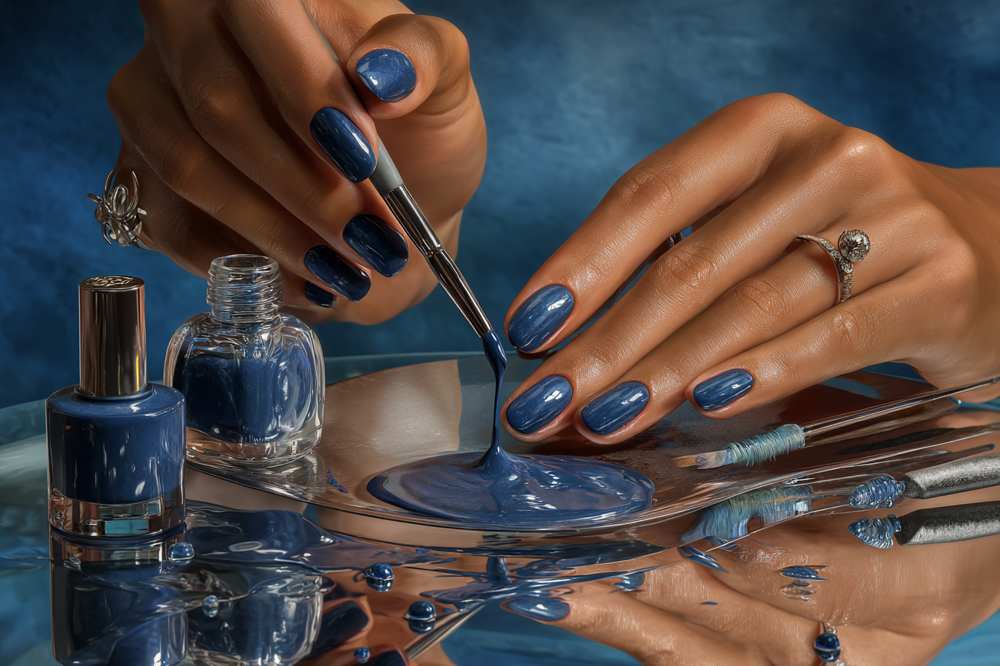
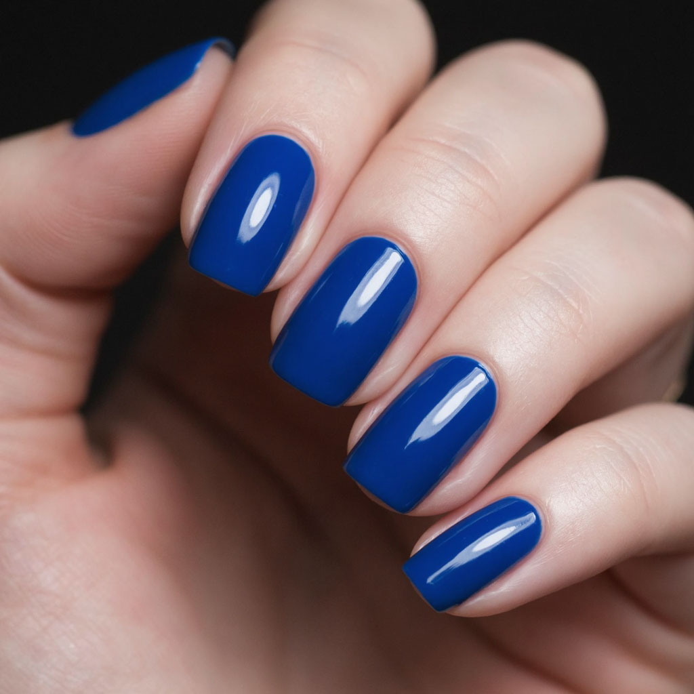

Как ухаживать за ногтями осенью
Осенью организм сталкивается со стрессом, особенно на севере: световой день сокращается, а сочетание сырости, ветра и холода добавляют нагрузок как коже, так и ногтям. Согласно статистике, от ломкости ногтей страдают в среднем около 20% людей, большая часть из них — женщины старше 50 лет. Чаще всего проблема именно в ногтях на руках.
Почему осенью ломаются и слоятся ногти
- Влажность играет важнейшую и критическую роль. Научные изыскания и исследования не нужны, чтобы сделать вывод: сочетание ветра, сырости и холода негативно влияют на состояние как кожи, так и ногтей.
- Авитаминоз — не менее важная проблема. Ногти состоят из кератина, а для его правильного формирования необходимы витамины, минералы и микроэлементы. Ситуацию усугубляет не только недостаток витаминов, получаемых из пищи, но и тот факт, что организм готовится к зиме и сокращает их расход.
- Стресс и усталость тоже влияют. Осенью уровень кортизола (гормона стресса) повышается, что отрицательно влияет на кровообращение и доставку питательных веществ к ногтевым тканям.
- Сухость тоже сильно влияет. Да, проблемой является не только сырость, с которой мы сталкиваемся на улице, но и сухость в помещениях. Центральное отопление, обогреватели и тепловые пушки дома, на работе и даже в магазинах сильно сушат воздух, а перепады усугубляют проблему. Кератиновые ногтевые пластины начинают расслаиваться.
- Механическая травматизация — проблема, о которой часто забывают. Ношение перчаток, контакты с холодными поверхностями, чистящими средствами дополнительно разрушают ногти.
Что делать, чтобы сохранить ногти осенью?
Существует несколько несложных мер, которые могут если не предотвратить, то минимизировать нагрузку на ногти в холодное время года.
Уход за ногтями осенью
Основа основ — увлажнение. Нужно увлажнять кутикулу и ногтевую пластину, чтобы сохранять ее гибкость и прочность. Хорошо помогают средства с гиалуроновой кислотой. По результатам эксперимента, проведенного в Италии, статистически значимые улучшения состояния ногтей появились уже через 14 дней после начала применения. Через 6 месяцев значительное улучшение состояния ногтей отметили 76% участников.
Помимо косметических средств, нужно делать уходовый маникюр. Мягкая обработка кутикулы масляными растворами и аккуратное подпиливание могут предотвратить микротравмы.
Питание осенью для здоровья ногтей
Витаминизация сильно помогает здоровью ногтевых пластин. Нужно разнообразно питаться, есть продукты, содержащие цинк, железо и другие микроэлементы. Отдельные ученые отмечают пользу витамина B7. Можно принимать перорально в виде БАДов (после консультации с врачом), либо использовать крема и мази, содержащие эти элементы. Лучше всего — использовать комбинированный подход.
Защита от бытовой химии
Физическая защита — одна из наиболее очевидных мер. Контактов с бытовой химией практически невозможно избежать, поэтому рекомендуется использовать перчатки во время уборки, мытья посуды и других процедур.
Ультимативная защита: гель-лак
Осень — наиболее благоприятное время, чтобы делать гель-лак, потому что это не только красиво, но и полезно. Почему?
Физическая защита ногтевой пластины
Гель-лак банально создает защитный слой поверх ногтевой пластины. Он физически предотвращает расслоение, раскалывание и микротравмы, что особенно актуально осенью. Прочный материал защищает ноготь от контакта с агрессивными факторами окружающей среды — холодом, влажностью и ветром.
Предотвращение потери влаги
Гель-лак создает герметичный барьер, который снижает испарение влаги из ногтевой пластины. Это особенно важно осенью, когда влажность воздуха нестабильна. Выше мы уже писали, что наличие влаги в ногтевой пластине необходимо для ее гибкости и прочности.
Стойкость и долговечность
Гель-лаковое покрытие — крайне прочный и долговечный материал. Хоть такой уход и стоит дороже, чем обычный лак, держит внешний вид 2-3 недели даже при интенсивных нагрузках на руки.
Психологический аспект
Нет, это не притянутый за уши пункт. Существуют даже исследования, которые прямо подтверждают улучшение психологического удовлетворения женщин с дефектами ногтей, которым сделали гель-лак. Когда женщинам нравится свой внешний вид, у них повышается настроение, удовлетворение жизнью, что улучшает гормональный фон, положительно влияя на кровоток и состояние здоровья ногтей.
Что делать осенью, чтобы сохранить здоровье и красоту ногтей
Вот простой и короткий чек-лист:
- Хорошо кушать
- Использовать увлажняющие средства и масла
- Делать гель-лак два раза в месяц
- Носить перчатки на улице
- Использовать перчатки при работе с бытовой химией
Приходите в Салон красоты Сапфир в Тольятти. Мы подберем вам уходовые средства для ногтей и кутикулы и сделаем гель-лак с индивидуальным дизайном.